## GITHUB INSTALL
# credentials::set_github_pat()
# devtools::install_github("MDBAuth/WERP_toolkit", ref = 'packaging', subdir = 'werptoolkitr', force = TRUE)
## LOCAL INSTALL- easier for quick iterations, but need a path.
# devtools::install_local("C:/Users/galen/Documents/WERP_toolkit/werptoolkitr", force = TRUE)
# And for very fast iteration (no building, but exposes too much, often)
devtools::load_all("C:/Users/galen/Documents/WERP_toolkit/werptoolkitr")Plot demonstrations
Notebook to develop plots
Then send them to the werptoolkitr package. They’re just easier to develop here where there’s data to plot.
What’s the best way to do this though? just devtools::load_all(path/to/toolkit) for quick dev, anyway, I think.
Largely the same header junk as the other qmds here to allow me to load the toolkit different ways.
# library(werptoolkitr)
library(ggplot2)
library(dplyr) # make my life easier
Attaching package: 'dplyr'The following object is masked from 'package:testthat':
matchesThe following objects are masked from 'package:stats':
filter, lagThe following objects are masked from 'package:base':
intersect, setdiff, setequal, unionscenario_dir <- file.path('scenario_example')
ewr_results <- file.path(scenario_dir, 'module_output', 'EWR')
geo_data_dir <- system.file("extdata", package = 'werptoolkitr')Scenario information
This needs to come from somewhere. For now, I’m just using it for diagnostic plots, so make it here.
scenarios <- tibble::tibble(scenario = c('base', 'down4', 'up4'), delta = c(1, 0.25, 4))I think I probably want to make a standard ordering of the scenarios. Can I push something through to plots
sceneorder <- forcats::fct_reorder(scenarios$scenario, scenarios$delta)Descriptive
Hydrographs
Settings
hydropath <- file.path('scenario_example', 'hydrographs')There is code to unpack that, but it’s in python and sends them to the EWR, but here we just want to read them in. Here, make something that we can also change. With a wrapper that lets me read different hydrograph formats.
mdba_gauge_getter seems to default to flow, and gets them with 141, ML/day. Check that all makes sense- what does EWR use? It is ML/day for most gauges (which is varto = 141), though some are stage gauges and use 100.
# read_hydro <- function(hydropath, long = TRUE, format = 'csv') {
# if (format == 'csv') {
# return(read_hydro_csv(hydropath, long))
# }
# }
#
# read_hydro_csv <- function(hydropath, long) {
# all_hydros <- list.files(hydropath, recursive = TRUE)
# # read-in and extract the names
# hydros <- readr::read_csv(file.path(hydropath, all_hydros), id = 'scenario') |>
# dplyr::mutate(scenario = stringr::str_extract(scenario, "(\\w|\\d)+\\.csv$"),
# scenario = stringr::str_extract(scenario, '^[\\w|\\d]+'))
#
# if (long) {
# hydros <- tidyr::pivot_longer(hydros, cols = -c(scenario, Date), names_to = "gauge", values_to = "flow")
# }
#
# return(hydros)
# }Now, make a plot. How do we want to organise it? There are lots of options. Particularly subsetting gauges.
scenehydros <- read_hydro(hydropath, long = TRUE, format = 'csv')gauges_to_plot <- c('412002', '419001', '422028', '421001')forcats::fct_reorder(scenario, flow, .fun=median)
scenehydros |>
dplyr::filter(gauge %in% gauges_to_plot) |>
ggplot2::ggplot(ggplot2::aes(x = Date, y = flow,
color = forcats::fct_relevel(scenario, levels(sceneorder)))) +
ggplot2::geom_line() +
ggplot2::facet_wrap(~gauge) +
theme_werp_toolkit()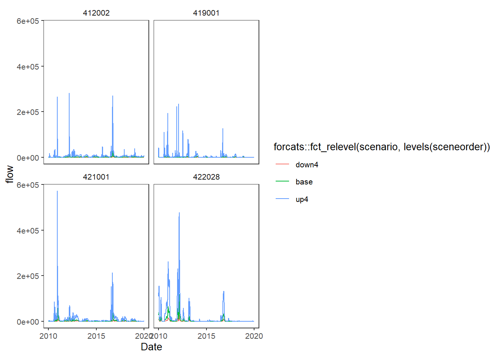
Make that a function
Moved it to the package
A typical plot
First, let’s establish a standard set of colours with base as a reference
# rcartocolor::Antique
# RColorBrewer::Set2
scene_pal <- make_pal(unique(scenehydros$scenario), palette = 'ggsci::nrc_npg', refvals = 'base', refcols = 'black')
scene_pal<colors>
black #E64B35FF #4DBBD5FF plot_hydrographs(scenehydros, gaugefilter = gauges_to_plot, colors = scene_pal)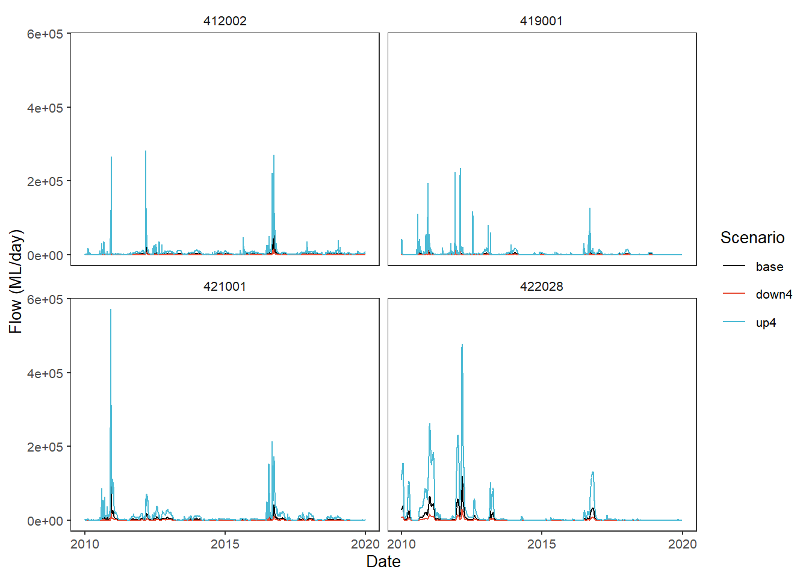
A test with scenariofilter, scales, and trans. Kinda silly, but shows it works
plot_hydrographs(scenehydros, gaugefilter = gauges_to_plot, scenariofilter = c('up4', 'down4'), scales = 'free_y', transy = 'log10')colors not specified per level. Trying to use the 'colors' argument as a palette
nameWarning: Transformation introduced infinite values in continuous y-axis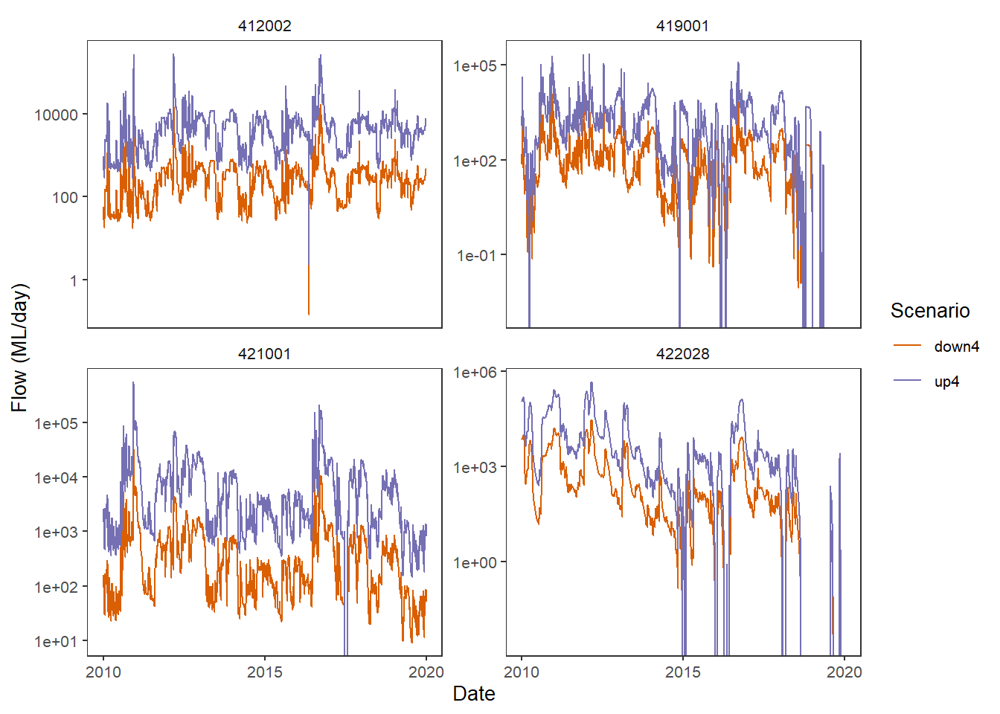
What else might we want to do?
select scenarios
color/fill the backgrounds by catchment? that’s getting fairly fancy.
average over something? Not sure that really makes sense? I think this might be good for now.
Theming: a set theme. and standard set of scenario colours that is consistent across figs, even when scenarios are filtered.
I think make the theme set, and the colors we allow an argument, and make the user specify those relationships if they want to.
Setting baseline
We want to set a baseline and the relationship to it. The baseline should be able to be either a scenario name or a scalar. Potentially something else (e.g. historical daily means), but deal with that later- relatively straightforward to add a method to pass a dataframe with date and flow cols, for example.
Do we want to build it into the plot functions, or pre-run it? Definitely make it available for the latter, but does it just make the plot functions too messy? Would be nice for auto-labelling though.
dif_flow <- baseline_compare(scenehydros, compare_col = 'scenario', base_lev = 'base', values_col = 'flow', comp_fun = difference)plot_hydrographs(dif_flow, gaugefilter = gauges_to_plot, y_col = 'difference_flow', colors = scene_pal)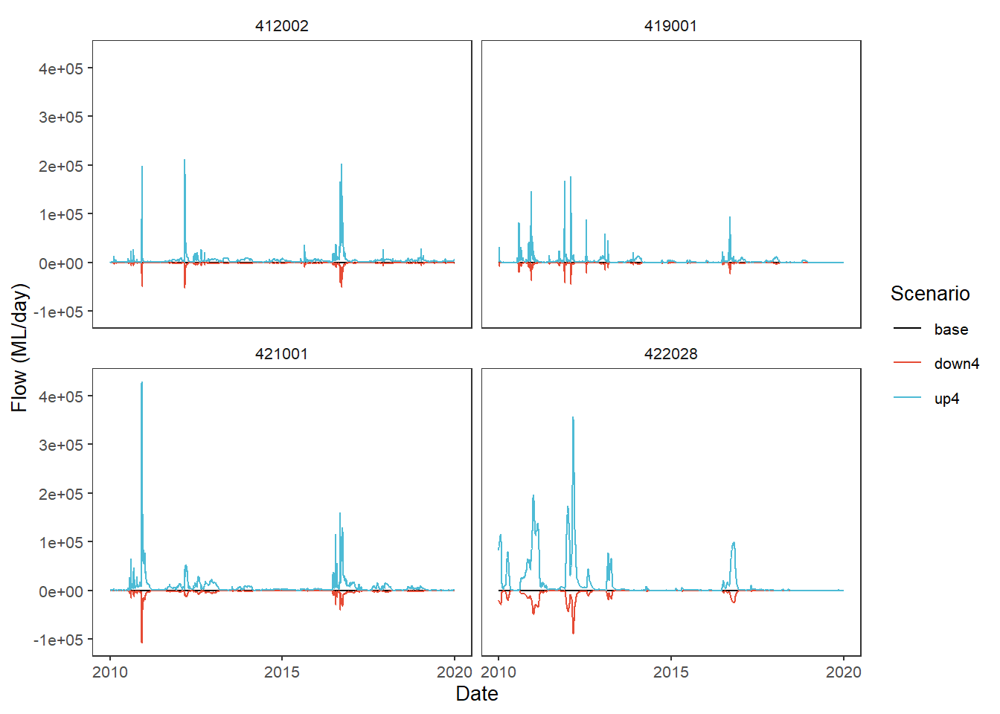
Relative
rel_flow <- baseline_compare(scenehydros, compare_col = 'scenario',
base_lev = 'base',
values_col = 'flow', comp_fun = relative, add_eps = min(scenehydros$flow[scenehydros$flow > 0])/10)plot_hydrographs(rel_flow, gaugefilter = gauges_to_plot, y_col = 'relative_flow', colors = scene_pal)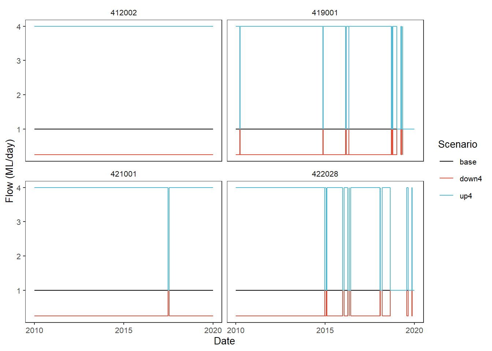
Well, I guess that makes sense. The scenarios are 4x and 0.24x, and so they always are flat lines at those levels (plus the add_eps) unless everything is 0. It will be more relevant for other things, I think.
Mutliplicative will usually make more sense with a logged y
plot_hydrographs(rel_flow, gaugefilter = gauges_to_plot, y_col = "relative_flow", colors = scene_pal, transy = 'log10')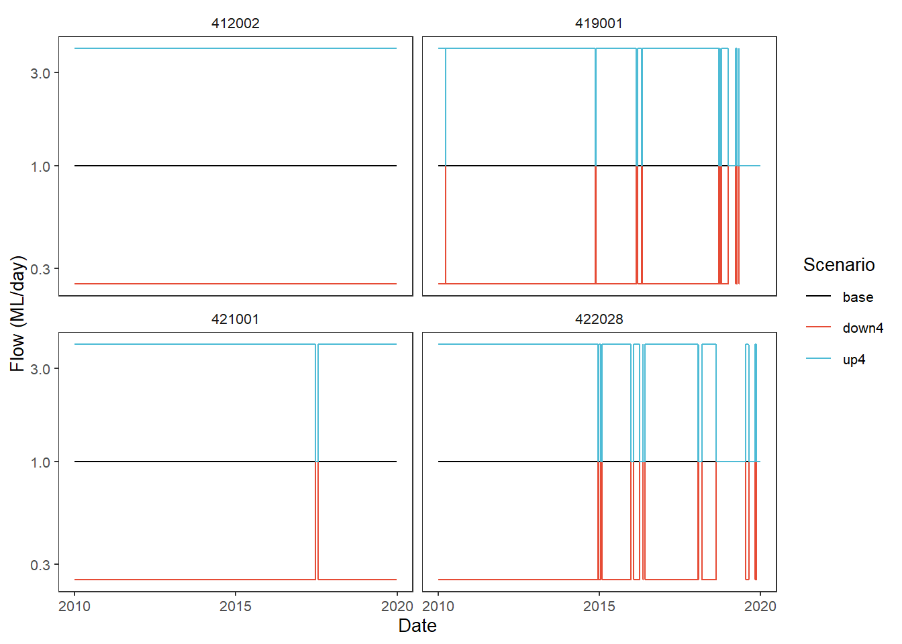
transy = 'log' works too, but scales::trans chooses ugly axis labels. Not that these are great, but they’re not as horrible.
I now have incorporated the ability to pass the comparison bit directly into the plot function. It’s likely the y-labels will need to be changed post-hoc, but that’s easy with + ylab('new label'). It just ended up making more sense to label with exactly what they are, rather than all permutations of how i might want to label differences vs relatives vs. whatever down the track.
To re-do the above in one go, start with scenehydros directly
plot_hydrographs(scenehydros, gaugefilter = gauges_to_plot, y_col = 'flow', colors = scene_pal, base_lev = 'base', comp_fun = difference)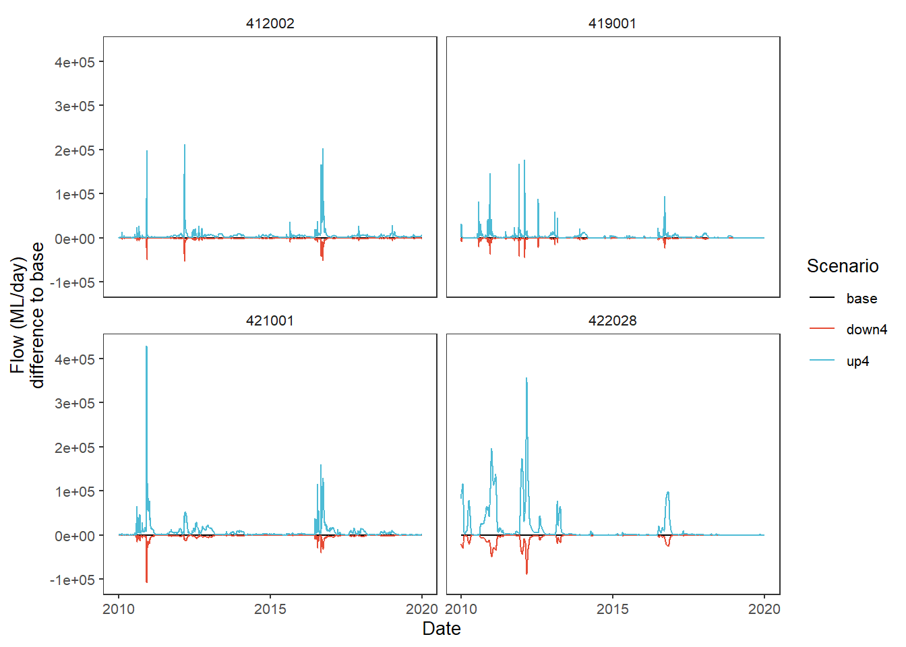
For the relative, I’m not adding an eps, but letting the zeros drop out here.
plot_hydrographs(scenehydros, gaugefilter = gauges_to_plot, y_col = 'flow', colors = scene_pal, base_lev = 'base', comp_fun = relative)Warning: Removed 135 rows containing missing values (`geom_line()`).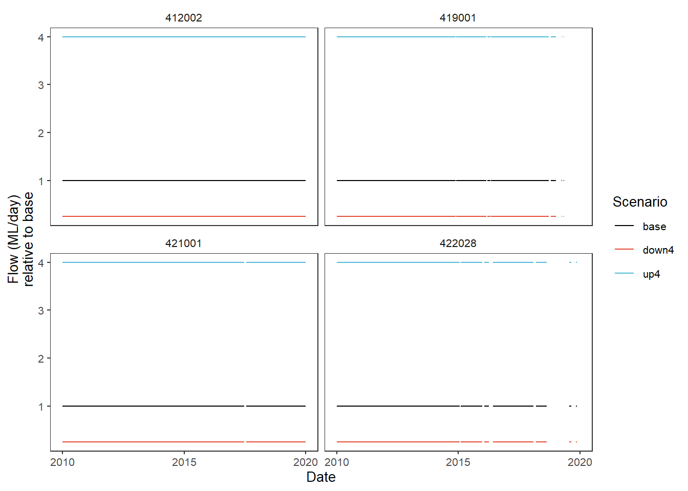
Describing the aggregation
These are Georgia’s tile plots and maps. Need to automate how they’re done. Will need the list-saved aggregations, as well as the aggseq and funseqs.
Though with the names and aggseqs as columns, I should be able to say what happened to the final outcome, just won’t be able to build up the plots. That’s fine, I think. Then can loop over the list if I want to show the build-up.
Analysis
David’s heatmap
We can’t do this yet- all we have is flow scaling, which is one-d. That’s fine, I can make a 1-d version (e.g an x with flow scaling, y with outcome, and fit a curve/kernel/line. But even then, we don’t have anywhere like enough data. So for now, I think we just geom_line() it, but put in the ability to use a kernel density or a spline or something.
The maps are actually really close to it too- they have y_col mapped to fill.
The 1-d version will end up looking at lot like some of the figures we had in the demo doc, and for good reason- that’s what they are.
So, develop the 1-d version
Scenario vs outcome 1d
This should take tibbles of some sort, arguments for the outcome and any groupings and return a ggplot. Possibly facetted.
Test first with just the EWR output summary
Assume we always have a ‘scenario’ column
Filtering is going to be trickier here- we can’t really use gaugefilter since we can’t assume gauges will exist.
At some level, should I just enforce the look with make_pal and theme_werp_toolkit at let us build plots ad-hoc? Yes, but let’s still provide some standard ones.
Bar
This really is a bit of a mess. We need to only plot a single value per x/color/fill/facet factorial. (and color and fill are unlikely to differ)
ggplot2::ggplot(summary_ewr_output,
ggplot2::aes(x = scenario, y = ewr_achieved, fill = scenario)) +
ggplot2::geom_col() # I think same as geom_bar(stat = 'identity')- plots the value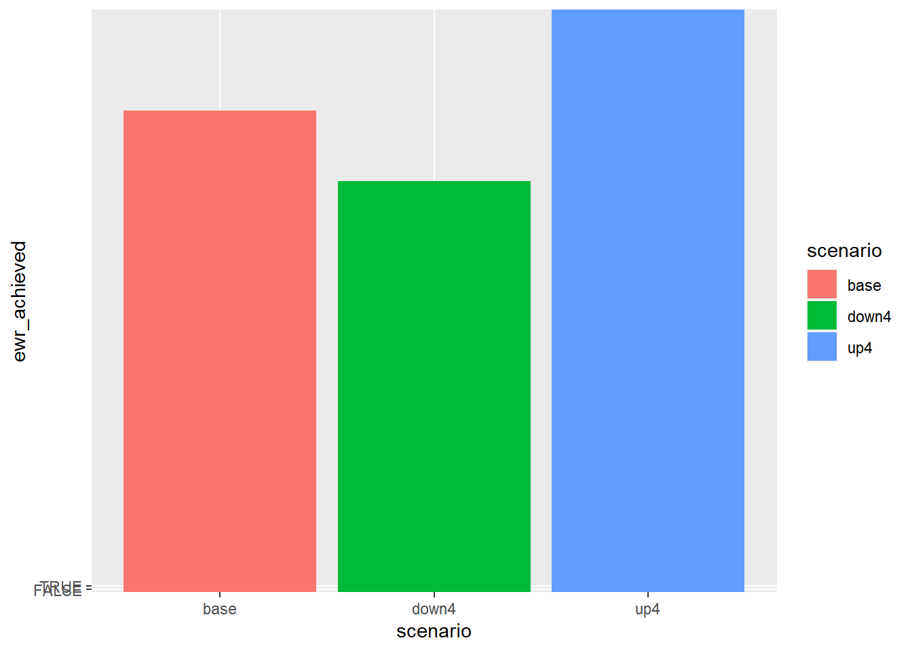
That’s quite clearly NOT plotting a single value. We could aggregate (e.g. over gauges), or we can split. Here, what varies within scenario? gauge, ewr_code , ewr_code_timing, anything else?
summary_ewr_output %>%
# just grab the first code_timing
dplyr::group_by(ewr_code, gauge, scenario) %>%
dplyr::slice(1) %>%
dplyr::ungroup() %>%
dplyr::filter(ewr_code %in% c('BF1', 'LF1', "OB5") &
gauge %in% c("412002", "412005", "412038")) %>%
ggplot2::ggplot(ggplot2::aes(x = scenario, y = ewr_achieved, fill = scenario)) +
ggplot2::geom_col() + # Same as geom_bar(stat = 'identity')- plots the value
# use `reformulate` to end run the rlang issues of characters
ggplot2::facet_grid(reformulate('gauge','ewr_code'))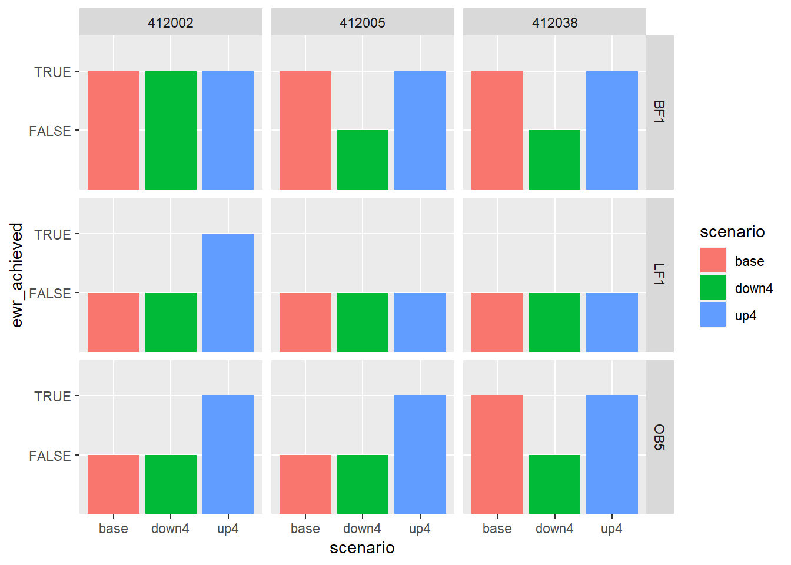
So, how much handholding do we want to do? I think if we want to keep data general, as little as possible. By the time we get the data arrangement sorted out, we’ll kind of end up just wrapping the ggplot call in the arguments. I guess though we still want to do the plot_prep for baselining and colors? I have a feeling the workflow in practice will be more like
dataprep –> plot_prep -> ggplot code -> scale_color_manual + theme_werp_toolkit
but we can build a function, I guess.
If we get to the point of making default plots, then the dataprep can be rolled up into a default_bar function or whatever.
Anyway, let’s assume the data has been arranged in a reasonable way by the user. Then, we can pass in a fill, facet_row, facet_col, and call it a day with a little check that fill * row * col isn’t longer than nrows.
OR, is it better to settle on what the default plots should be, and then just make them in a notebook with exposed ggplot code, since that’s more readable anyway? quite possibly. We just need to be really targetted and not fill notebooks up with 100 different copy-paste variations- at that point it SHOULD be a function. But maybe don’t write those until we bash through what we want for a given case study/report whatever. IE have an ‘experiment’ notebook that manages the run and its outputs, and use the plot infrastructure functions but not all the way to full plotting functions?
That would still let me enforce color palettes across scenarios, for example.
Kind of what I’m wondering is if the answer is more aggressive editing and re-writing, rather than functions all over the place. It will depend how things progress, I think.
I’ll get through this plot, and then make more demos just in ggplot (e.g. the next couple, maps, etc). Then we can decide exactly what the functions need to do. We already have causal plot funs too.
One MAJOR advantage of functions is that any data changes that clean it for a given plot aren’t preserved, and so it’s way easier to keep the data clean and know what we’re working with. and if we consistently do the same changes, that can be its own function, e.g. plot_prep
The above can now be created with a function
First, it’s the user’s responsibility to know what the data looks like. Make some
ewr_to_bar_data <- summary_ewr_output %>%
# just grab the first code_timing
dplyr::group_by(ewr_code, gauge, scenario) %>%
dplyr::slice(1) %>%
dplyr::ungroup() %>%
dplyr::filter(ewr_code %in% c('BF1', 'LF1', "OB5") &
gauge %in% c("412002", "412005", "412038"))Then plot, and feed it the scenario palette scene_pal . otherwise it auto-generates with scico::oslo.
plot_outcomes(ewr_to_bar_data,
y_col = 'ewr_achieved',
facet_row = 'gauge',
facet_col = 'ewr_code',
colorset = 'scenario',
pal_list = scene_pal,
sceneorder = levels(sceneorder))colors not specified per level. Trying to use the 'colors' argument as a palette
name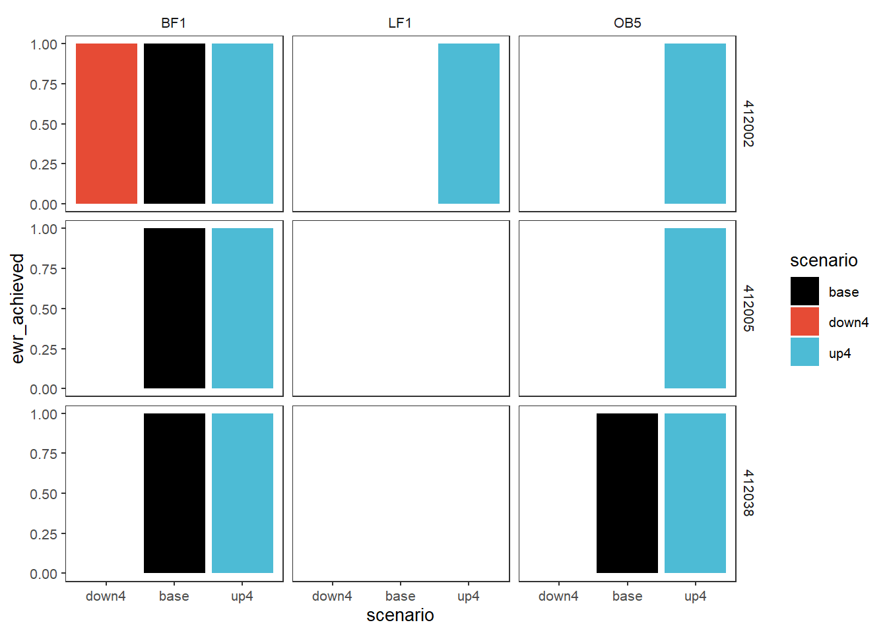
Maybe not the prettiest color choices, but everything is working.
Do I want a file in /R that just establishes all the default orders and palettes? Probably. Could be a function that gets called, e.g. set_plot_defaults_werp() at the head of notebooks/scripts.
Same thing, but better data
at the other end of the spectrum, let’s look at the basin-scaled data
Set up the data we want to plot. There are 27 objectives. Should we just use them all? Try it.
basin_to_plot <- agg_theme_space$mdb %>%
rename(allArith = 4, oneLimiting = 5) %>% # for readability
filter(!is.na(Objective))There’s really only one thing to facet, so should drop to facet_wrap instead of facet_grid.
plot_outcomes(basin_to_plot,
y_col = 'allArith',
facet_wrapper = 'Objective',
colorset = 'scenario',
pal_list = scene_pal,
sceneorder = levels(sceneorder))colors not specified per level. Trying to use the 'colors' argument as a palette
name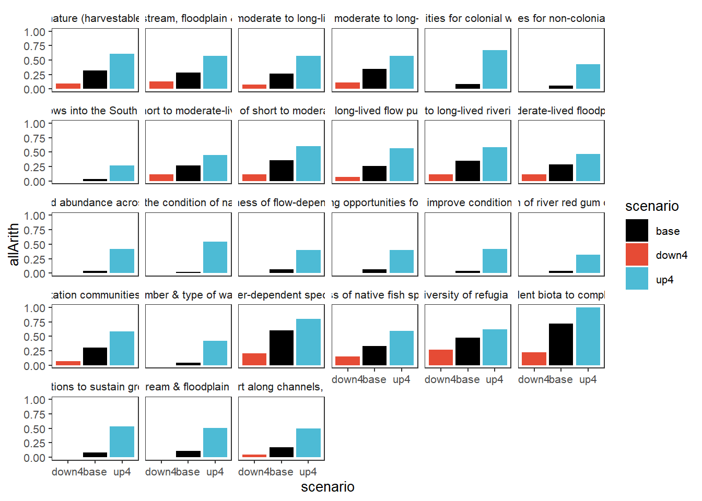
Stacked bar, multiple outcomes
What’s x and what’s the stack? could be ewr_code or scenario in either place. Does it matter? Maybe not?
ggplot(basin_to_plot, aes(x = scenario, y = allArith, fill = Objective)) +
geom_col() + theme(legend.position = 'none')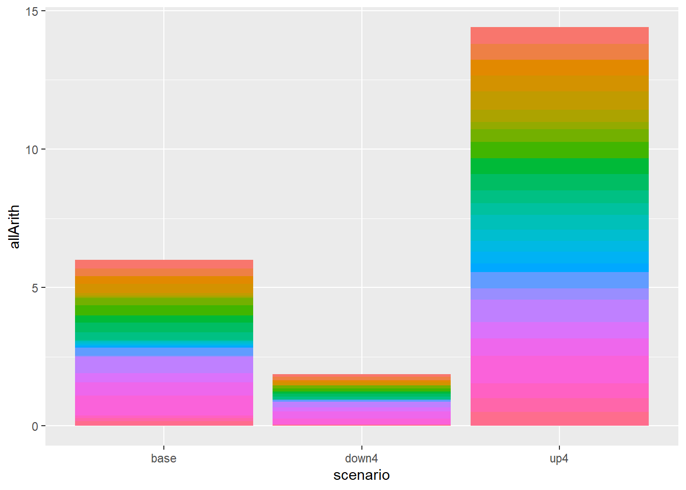
THat’s basically it, once i sort out the color-grouping-
Can I group these in some way? I have some code in causal network plots that allows specifying colors by group within a col that might work really well, e/.g. make the different Fish outcomes shades of blue, veg green, etc…
I now have a function.
I can use a single color palette
basin_to_plot <- agg_theme_space$mdb %>%
dplyr::rename(allArith = 4, oneLimiting = 5) %>% # for readability
dplyr::filter(!is.na(Objective))
basin_plot <- plot_outcomes(basin_to_plot,
y_col = 'allArith',
colorset = 'Objective',
pal_list = list("scico::oslo"),
sceneorder = c('down4', 'base', 'up4'))colors not specified per level. Trying to use the 'colors' argument as a palette
name basin_plot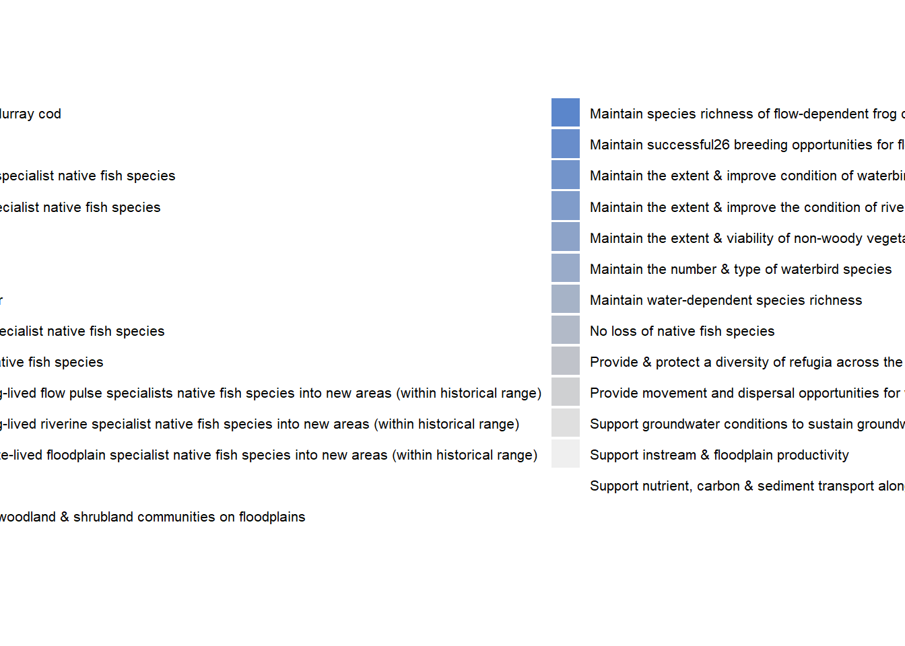
# labels are terribly long
basin_plot + theme(legend.position = 'none')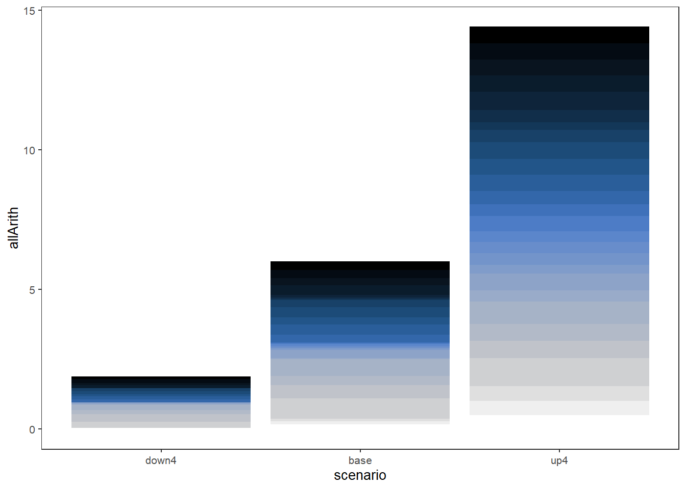
I can specify groups and use different palettes for each
obj_sdl_to_plot <- agg_theme_space$sdl_units %>%
dplyr::rename(allArith = 4) # for readability
# Create a grouping variable
obj_sdl_to_plot <- obj_sdl_to_plot |>
dplyr::mutate(env_group = stringr::str_extract(env_obj, '^[A-Z]+')) |>
dplyr::filter(!is.na(env_group)) |>
dplyr::arrange(env_group, env_obj)
# Create a palette list
grouplist = list(EF = 'grDevices::Purp',
NF = 'grDevices::Mint',
NV = 'grDevices::Burg',
OS = 'grDevices::Blues',
WB = 'grDevices::Peach')
# need to facet by space sdl unit and create a group col to take multiple palettes
sdl_stack <- obj_sdl_to_plot |>
plot_outcomes(y_col = 'allArith',
colorgroups = 'env_group',
colorset = 'env_obj',
pal_list = grouplist,
facet_wrapper = 'SWSDLName',
sceneorder = c('down4', 'base', 'up4'))colors not specified per level. Trying to use the 'colors' argument as a palette
namesdl_stack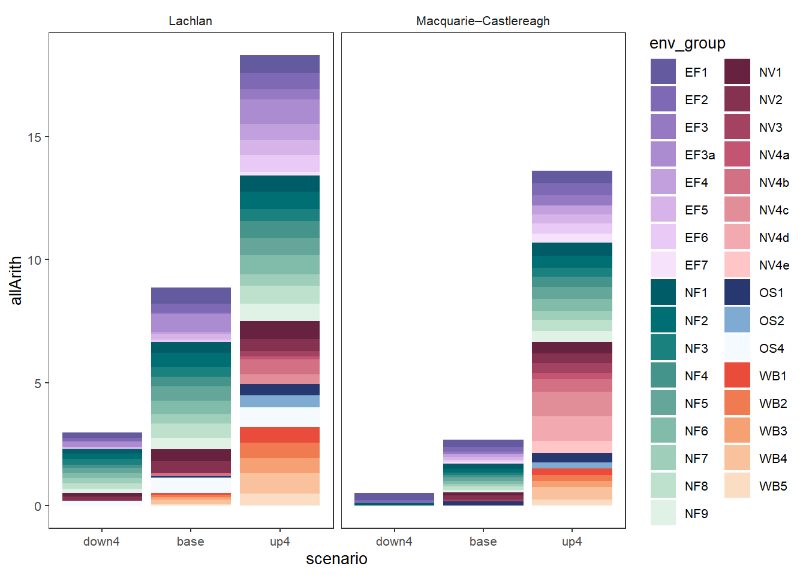
And I can specify that differently with facet_wrap and facet_rows
sdl_plot_facrow <- obj_sdl_to_plot |>
plot_outcomes(y_col = 'allArith',
colorgroups = 'env_group',
colorset = 'env_obj',
pal_list = grouplist,
facet_col = 'SWSDLName',
facet_row = '.',
sceneorder = c('down4', 'base', 'up4'))colors not specified per level. Trying to use the 'colors' argument as a palette
name sdl_plot_facrowAnd it might actually look best to facet on the groups
sdl_plot_factgroup <- obj_sdl_to_plot |>
plot_outcomes(y_col = 'allArith',
colorgroups = 'env_group',
colorset = 'env_obj',
pal_list = grouplist,
facet_row = 'SWSDLName',
facet_col = 'env_group',
sceneorder = c('down4', 'base', 'up4'))colors not specified per level. Trying to use the 'colors' argument as a palette
namesdl_plot_factgroup
This is kind of a cool plot too
obj_pal <- make_pal(levels = unique(obj_sdl_to_plot$env_group),
palette = 'scico::berlin')
sdl_plot_groupblock <- obj_sdl_to_plot |>
plot_outcomes(y_col = 'allArith',
x_col = 'scenario',
colorgroups = 'env_group',
colorset = 'env_obj',
color_lab = 'Environmental\ngroup',
pal_list = obj_pal,
facet_row = 'SWSDLName',
facet_col = '.',
scene_pal = scene_pal,
sceneorder = c('down4', 'base', 'up4'))
sdl_plot_groupblock + theme(legend.position = 'left')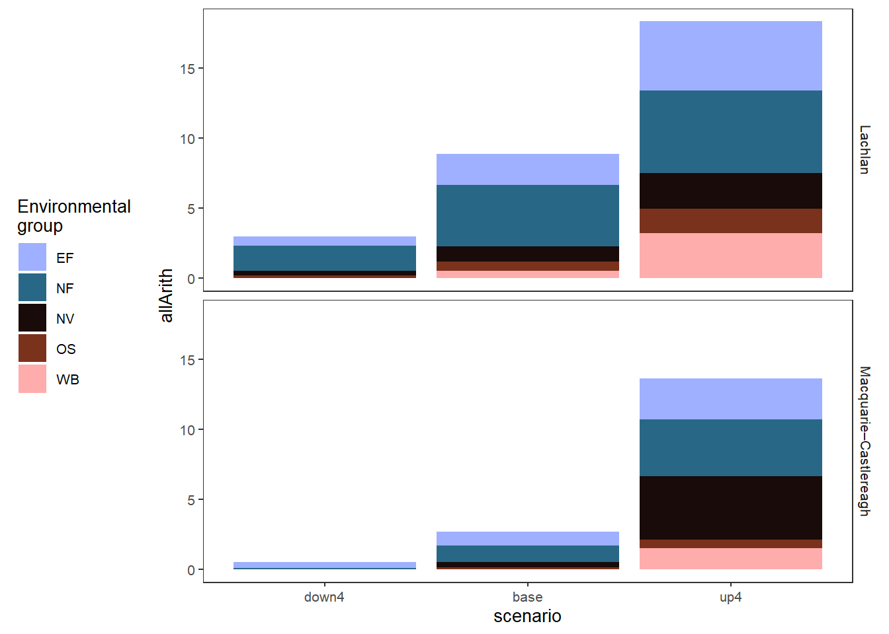
Flipped axes
Does that actually work better with the objectives on x and scenarios as colors? Maybe coord_flipped?
I haven’t done a plot_prep here, so the scenarios aren’t ordered properly, but that basically works. Maybe we should fct_reorder? Not sure what the natural ordering is.
ggplot(basin_to_plot, aes(x = forcats::fct_reorder(Objective, allArith,
.fun = sum,
.desc = TRUE),
y = allArith, fill = scenario)) +
geom_col() + scale_fill_manual(values = scene_pal) 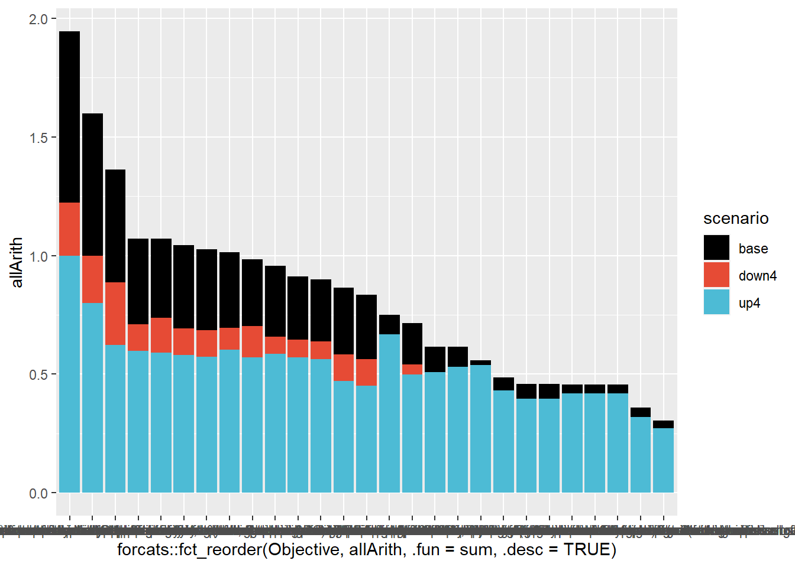
So, that’s one option. It might be nice to put them in groups somehow (or have that ability). ie lump by fish, veg, whatever. For some outcomes we don’t know what that looks like.
One option is to fct_reorder2 with a group col, another is to use the group color thing I want to do above to set color (i.e. the outline).
And we need to make those names readable, but that’s going to be a job. Just flipping coords doesn’t work. stringr::str_wrap helps, but those names just need to be shortened, and that’s a manual job.
ggplot(basin_to_plot, aes(x = forcats::fct_reorder(
stringr::str_wrap(Objective, 20),
allArith,
.fun = sum,
.desc = TRUE),
y = allArith,
fill = scenario)) +
geom_col() +
scale_fill_manual(values = scene_pal) +
coord_flip()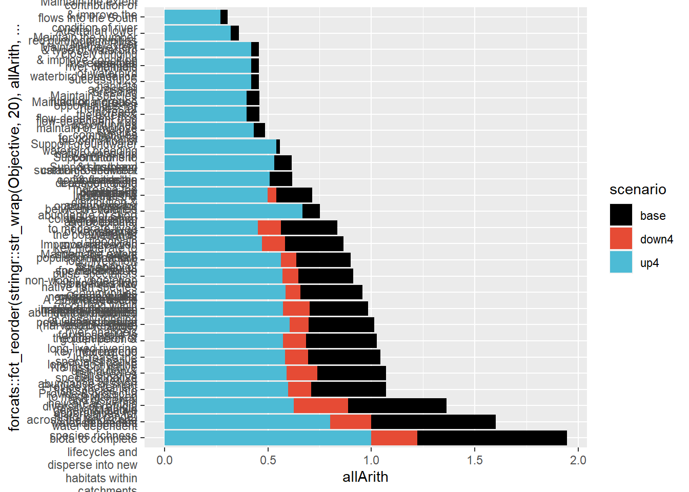
Now that I have a function for the other way, hopefully I can just modify it to make this stack. Will need to swap x and fill, and pass in scene_pal instead of of the big palette list (in addition to, if I want to color the bar outlines?).
For the same set as the function-ed stacks above (and the same as the env_group stack above, but without the grouping. this is similar to above, but now we don’t give different palettes to the groups.
obj_sdl_to_plot |>
plot_outcomes(y_col = 'allArith',
colorgroups = NULL,
colorset = 'env_obj',
pal_list = list('scico::berlin'),
facet_row = 'SWSDLName',
facet_col = '.',
scene_x = FALSE,
scene_pal = scene_pal,
sceneorder = levels(sceneorder))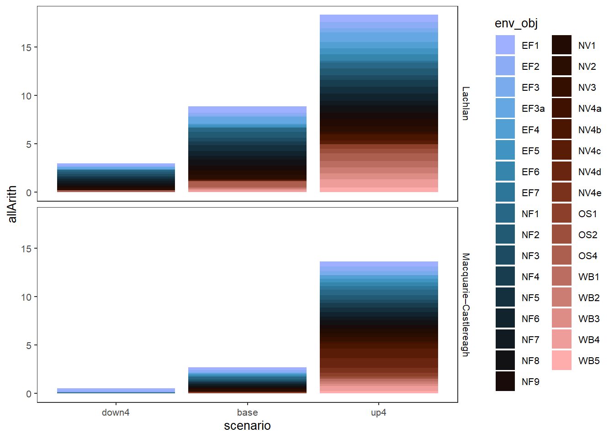
I’m really close to having a grouping aesthetic, (I can assign color), but using color on bar plots is ugly. Some sort of faint background would be better, or coloring the x-labels by group. Not worth the time now, but it’s set up to do if I can figure out how to do those things.
what does that look like facetted on the groups of outcomes as well? It works OK, but not as well as when the individual objectives are stacked, since each one gets its own x-tick. I hoped scales = 'free_x' would work to just give each one a subset, but it only does when the groupings are in facet-columns. That’s probably OK?
stackfacet <- obj_sdl_to_plot |>
plot_outcomes(y_col = 'allArith',
colorgroups = NULL,
colorset = 'env_obj',
pal_list = list('scico::berlin'),
facet_row = 'SWSDLName',
facet_col = 'env_group',
scales = 'free_x',
scene_x = FALSE,
scene_pal = scene_pal,
sceneorder = levels(sceneorder))
stackfacet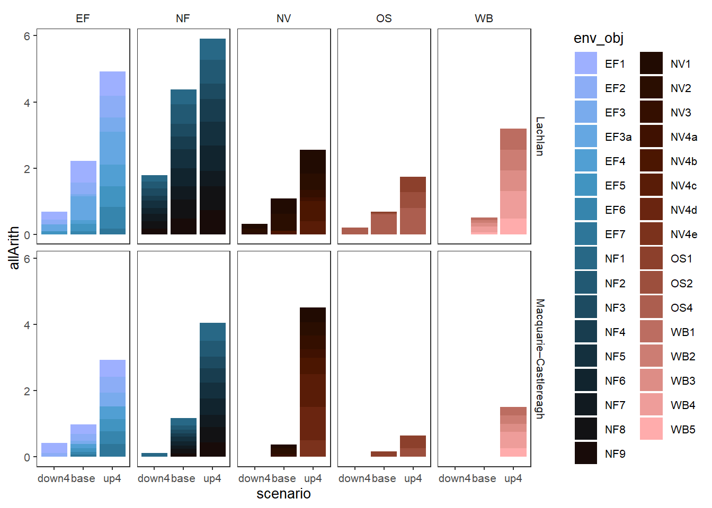
We can (I think) dodge the bars. These are ggplot objects, so we can tweak them a bit after they come out of the main function.
dodgefacet <- obj_sdl_to_plot |>
plot_outcomes(y_col = 'allArith',
y_lab = 'Proportion Success',
colorgroups = NULL,
colorset = 'env_obj',
pal_list = list('scico::berlin'),
facet_row = 'SWSDLName',
facet_col = 'env_group',
scales = 'free_x',
scene_x = FALSE,
scene_pal = scene_pal,
sceneorder = levels(sceneorder),
position = 'dodge')
dodgefacet + theme(legend.position = 'bottom') + labs(x = 'Environmental Objective')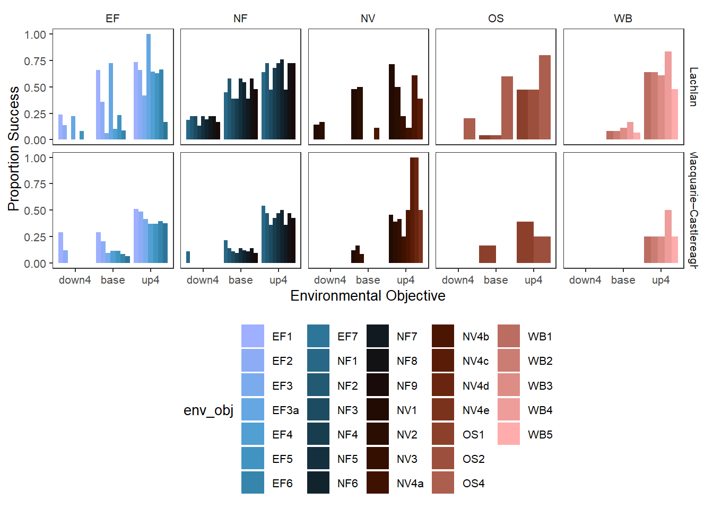
scenario colors
Those last two also work well (better) with scenario as colors and env_obj as x
stackfacet <- obj_sdl_to_plot |>
plot_outcomes(y_col = 'allArith',
x_col = 'env_obj',
colorgroups = NULL,
colorset = 'env_obj',
pal_list = list('scico::berlin'),
facet_row = 'SWSDLName',
facet_col = 'env_group',
scales = 'free_x',
scene_x = FALSE,
scene_pal = scene_pal,
sceneorder = levels(sceneorder))
stackfacet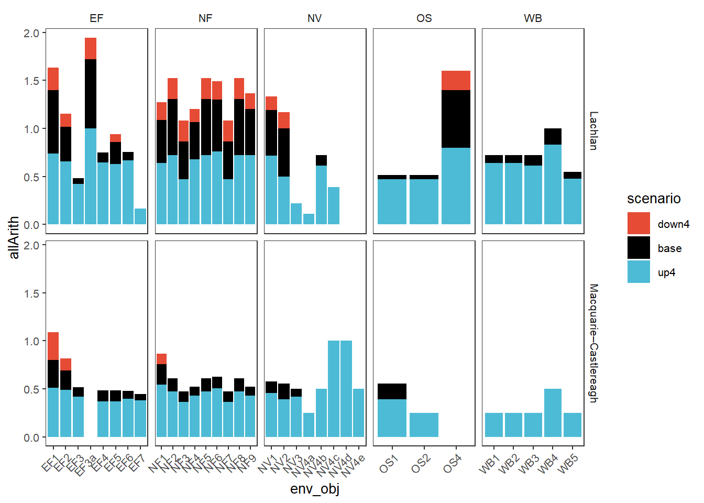
We can (I think) dodge the bars. These are ggplot objects, so we can tweak them a bit after they come out of the main function.
dodgefacet <- obj_sdl_to_plot |>
plot_outcomes(y_col = 'allArith',
x_col = 'env_obj',
colorgroups = NULL,
colorset = 'env_obj',
pal_list = list('scico::berlin'),
facet_row = 'SWSDLName',
facet_col = 'env_group',
scales = 'free_x',
scene_x = FALSE,
scene_pal = scene_pal,
sceneorder = levels(sceneorder),
position = 'dodge')
dodgefacet + theme(legend.position = 'bottom') + labs(x = 'Environmental Objective')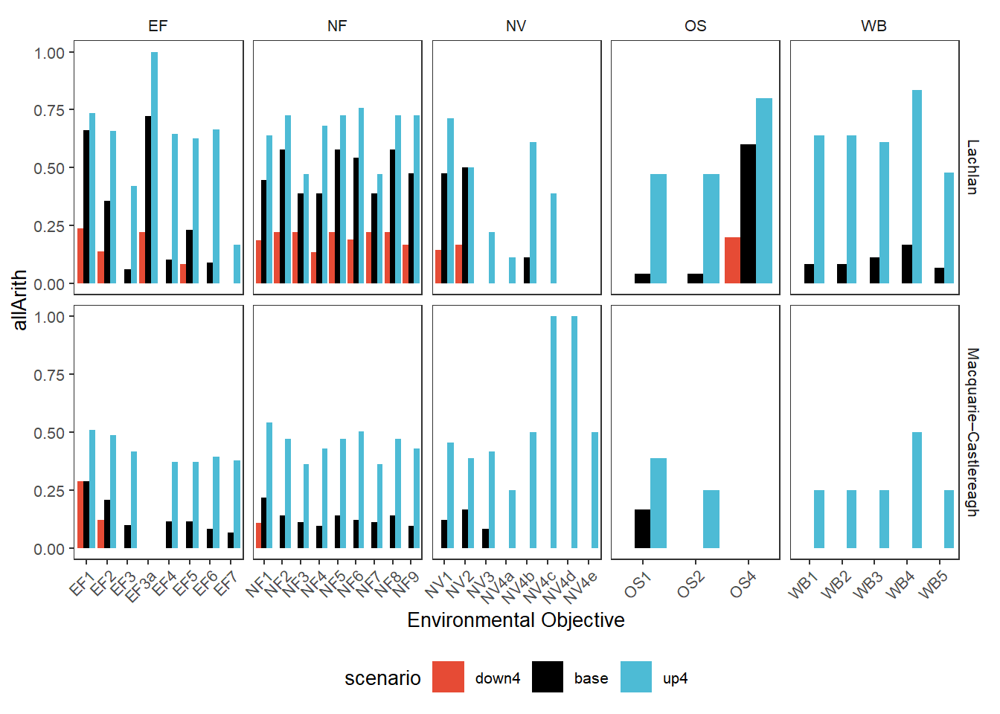
Lines with quant x
This is the sort of plot we might want to make for plotting the actual values that change between scenarios. In this case, we have scenarios with flow multipliers; we add those to the data with a left_join here, but they should be attached.
obj_sdl_to_plot <- obj_sdl_to_plot |>
left_join(scenarios)Joining, by = "scenario" sdl_line <- obj_sdl_to_plot |>
plot_outcomes(y_col = 'allArith',
x_col = 'delta',
colorgroups = NULL,
colorset = 'env_obj',
pal_list = list('scico::berlin'),
facet_row = 'SWSDLName',
facet_col = '.',
scene_pal = scene_pal,
sceneorder = c('down4', 'base', 'up4'))
sdl_line # + theme(legend.position = 'bottom')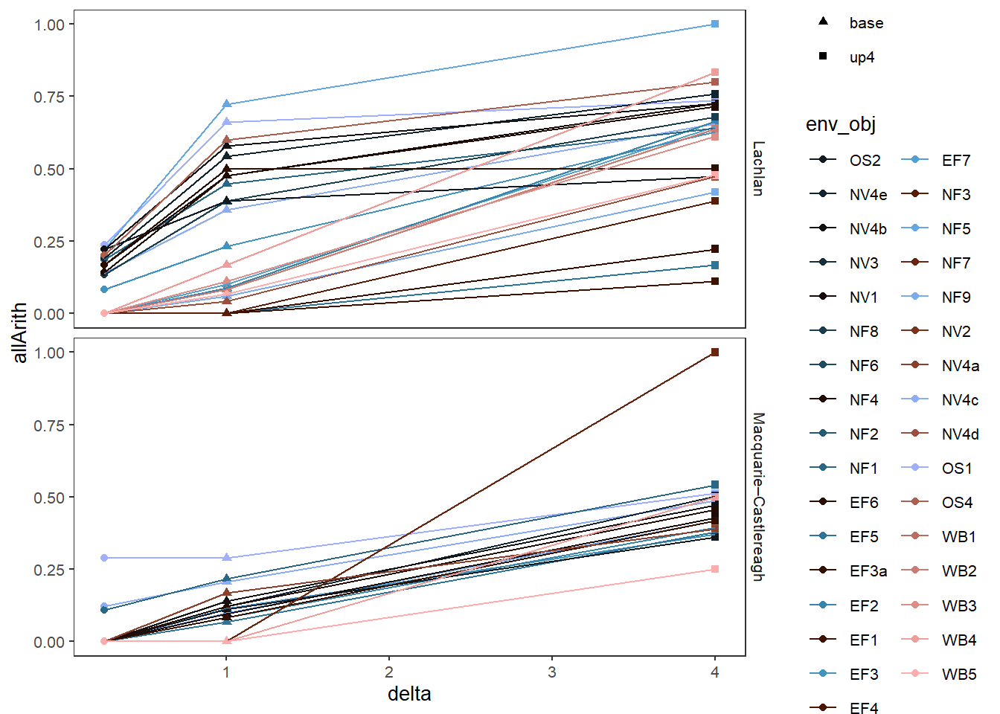
And we can do the same sorts of things here as elsewhere- make values relative, group the colors, etc
sdl_line_options <- obj_sdl_to_plot |>
plot_outcomes(y_col = 'allArith',
x_col = 'delta',
y_lab = 'Proportion met',
x_lab = 'Change in flow',
transx = 'log10',
color_lab = 'Environmental\ngroup',
colorgroups = 'env_group',
colorset = 'env_obj',
pal_list = obj_pal,
facet_row = 'SWSDLName',
facet_col = '.',
scene_pal = scene_pal,
sceneorder = c('down4', 'base', 'up4'),
base_lev = 'base',
comp_fun = 'relative',
group_cols = c('env_obj', 'polyID'))Warning: NaN and Inf introduced in `plot_prep`, likely due to division by zero.
45 values were lost. sdl_line_optionsWarning: Removed 30 rows containing missing values (`geom_point()`).Warning: Removed 12 rows containing missing values (`geom_line()`).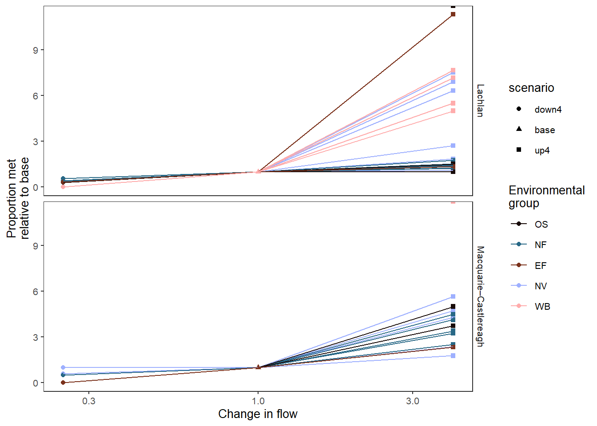
In the demo doc, Georgia had the lines as states. This should be flexible enough to do that (well, not states, necessarily, but arbitrary groups).
sdl_line_catchment <- obj_sdl_to_plot |>
plot_outcomes(y_col = 'allArith',
x_col = 'delta',
y_lab = 'Proportion met',
x_lab = 'Change in flow',
transx = 'log10',
color_lab = 'Catchment',
colorgroups = NULL,
colorset = 'SWSDLName',
point_group = 'env_obj',
pal_list = list('RColorBrewer::Dark2'),
facet_row = 'env_group',
facet_col = '.',
scene_pal = scene_pal,
sceneorder = c('down4', 'base', 'up4'),
base_lev = 'base',
comp_fun = 'difference',
group_cols = c('env_obj', 'polyID'),
smooth = FALSE)
sdl_line_catchment
And we can smooth- if we do it for unique groupings (e.g. same as above), we just get smooth curves, though the loess really hates the sample size.
sdl_line_catchment_smooth <- obj_sdl_to_plot |>
plot_outcomes(y_col = 'allArith',
x_col = 'delta',
y_lab = 'Proportion met',
x_lab = 'Change in flow',
transx = 'log10',
color_lab = 'Catchment',
colorgroups = NULL,
colorset = 'SWSDLName',
point_group = 'env_obj',
pal_list = list('RColorBrewer::Dark2'),
facet_row = 'env_group',
facet_col = '.',
scene_pal = scene_pal,
sceneorder = c('down4', 'base', 'up4'),
base_lev = 'base',
comp_fun = 'difference',
group_cols = c('env_obj', 'polyID'),
smooth = TRUE)
suppressWarnings(print(sdl_line_catchment_smooth))`geom_smooth()` using method = 'loess' and formula = 'y ~ x'
We can also use smoothing with multiple points, e.g. if we want to group data in some way- maybe use it to put a line through the color groups and ignore individual levels. This is dangerous- it’s an aggregation. So it’s usually better to do the aggregation explicitly, but if you’re OK with a mean aggregation within the implied groups here, it works, and shows the data points, which is nice.
sdl_smooth_groups <- obj_sdl_to_plot |>
plot_outcomes(y_col = 'allArith',
x_col = 'delta',
y_lab = 'Proportion met',
x_lab = 'Change in flow',
transx = 'log10',
color_lab = 'Environmental\ngroup',
colorgroups = 'env_group',
colorset = 'env_obj',
pal_list = obj_pal,
facet_row = 'SWSDLName',
facet_col = '.',
scene_pal = scene_pal,
sceneorder = c('down4', 'base', 'up4'),
base_lev = 'base',
comp_fun = 'difference',
group_cols = c('polyID'),
smooth = TRUE)
suppressWarnings(print(sdl_smooth_groups))`geom_smooth()` using method = 'loess' and formula = 'y ~ x'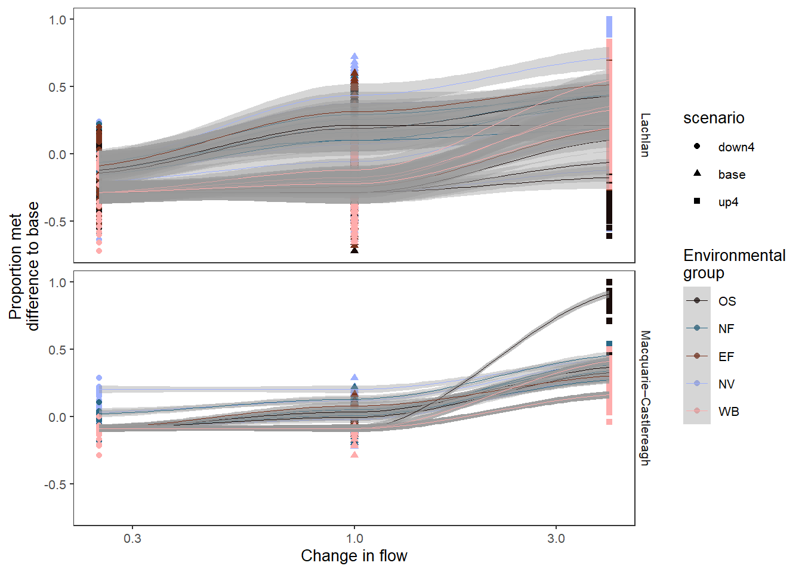
And if we use method = 'lm', we’re just taking a mean aggregation and plotting it with the data points. Jittering should help too.
sdl_smooth_mean <- obj_sdl_to_plot |>
plot_outcomes(y_col = 'allArith',
x_col = 'delta',
y_lab = 'Proportion met',
x_lab = 'Change in flow',
transx = 'log10',
color_lab = 'Environmental\ngroup',
colorgroups = 'env_group',
colorset = 'env_obj',
pal_list = obj_pal,
facet_row = 'SWSDLName',
facet_col = '.',
scene_pal = scene_pal,
sceneorder = c('down4', 'base', 'up4'),
base_lev = 'base',
comp_fun = 'difference',
group_cols = c('polyID'),
smooth = TRUE,
smooth_method = 'lm',
position = position_jitter(width = 0.01, height = 0))
suppressWarnings(print(sdl_smooth_mean))`geom_smooth()` using formula = 'y ~ x'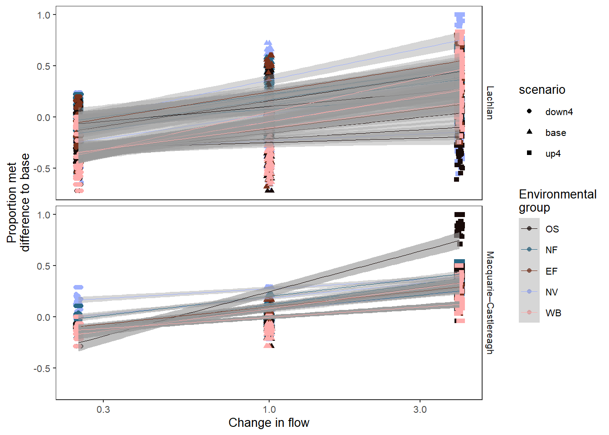
Maps
Maps are highly informative, but lose two potential data dimensions, and tend to provide quantitative information through fill. This means we often have to reduce the number of categories we look at and rely heavily on facetting.
We can plot both polygons and points, allowing us to plot any level of spatial aggregation. We can also plot multiple layers in the foreground and background, though at present these have fewer options than the ‘primary’ layer (e.g. we cannot plot data as fill in multiple polygon layers).
A minimal map of polygon aggregations with the basin in the background- we use underlay and overlay lists to put other layers in the background/foreground.
obj_sdl_to_plot |>
dplyr::filter(env_group == 'WB') |> # Need to reduce dimensionality
plot_outcomes(y_col = 'allArith',
y_lab = 'All Arithmetic Mean',
x_col = 'map',
colorgroups = NULL,
colorset = 'allArith',
pal_list = list('scico::berlin'),
facet_col = 'env_obj',
facet_row = 'scenario',
scene_pal = scene_pal,
sceneorder = c('down4', 'base', 'up4'),
underlay_list = list(underlay = basin,
underlay_pal = 'azure'))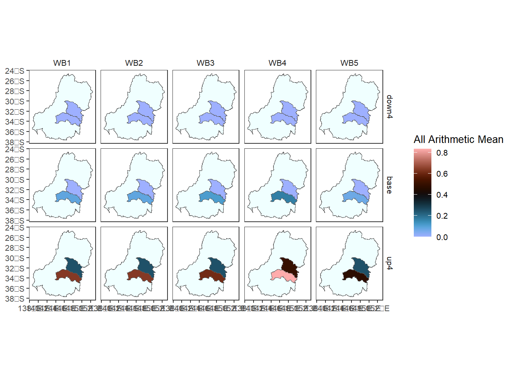
A minimal map with gauges as the focal spatial unit
# Still with the annoying way of handling the long names
env_obj_points_to_plot <- agg_theme_space$env_obj |>
dplyr::rename(allArith = 5)env_obj_points_to_plot |> # for readability
dplyr::filter(env_obj == 'NF1') |> # Need to reduce dimensionality
plot_outcomes(y_col = 'allArith',
y_lab = 'All Arithmetic Mean',
x_col = 'map',
colorgroups = NULL,
colorset = 'allArith',
pal_list = list('scico::berlin'),
facet_col = 'scenario',
facet_row = 'env_obj',
scene_pal = scene_pal,
sceneorder = c('down4', 'base', 'up4'),
underlay_list = list(underlay = 'basin',
underlay_pal = 'azure')) +
ggplot2::theme(legend.position = 'bottom')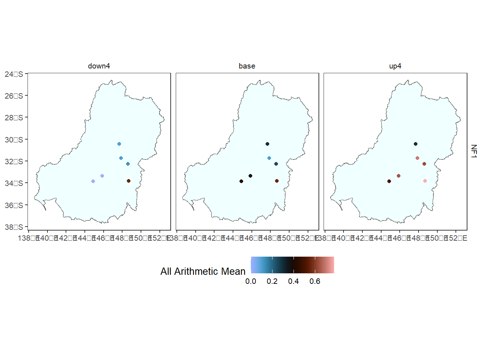
We can have informative fill in polygons underlying gauge data, here not with a data fill but a name fill. It is hard to find palettes for the full set of catchments. The only discrete palette available that makes sense is ggsci::default_igv, and it’s pretty garish. Using a continuous palette (e.g. scico::oslo ) works fine too, but the colors aren’t very well spatially-separated. We need to come up with a default set that we like, I think. Could be as simple as an actual mapping of specific colors to catchments, a la scene_pal.
env_obj_points_to_plot |> # for readability
dplyr::filter(env_obj == 'NF1') |> # Need to reduce dimensionality
plot_outcomes(y_col = 'allArith',
y_lab = 'All arithmetic mean',
x_col = 'map',
colorgroups = NULL,
colorset = 'allArith',
pal_list = list('scico::berlin'),
facet_col = 'scenario',
facet_row = 'env_obj',
scene_pal = scene_pal,
sceneorder = c('down4', 'base', 'up4'),
underlay_list = list(underlay = sdl_units,
underlay_ycol = 'SWSDLName',
underlay_pal = 'ggsci::default_igv')) +
ggplot2::theme(legend.position = 'bottom')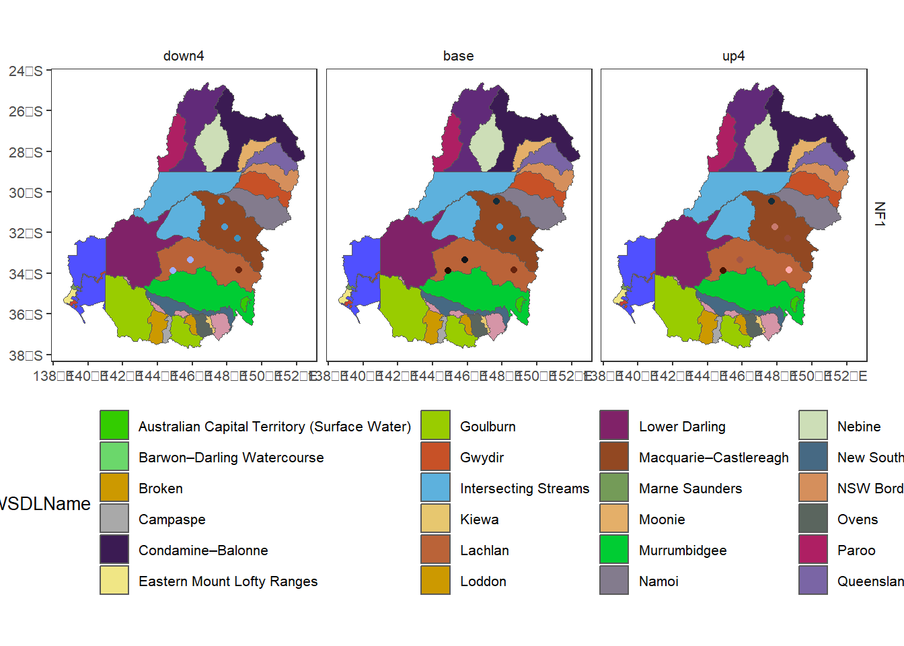
We can use a continuous variable on the underlay fill, but have to be careful to choose palettes that don’t mask each other. We can also have multiple levels of underlay polygons (e.g. if we want the basin under sdl units). Note that we can pass colors directly, and not necessarily as a palette.
env_obj_points_to_plot |> # for readability
dplyr::filter(env_obj == 'NF1') |> # Need to reduce dimensionality
plot_outcomes(y_col = 'allArith',
x_col = 'map',
colorgroups = NULL,
colorset = 'allArith',
pal_list = list('ggthemes::Orange-Gold'),
facet_col = 'scenario',
facet_row = 'env_obj',
scene_pal = scene_pal,
sceneorder = c('down4', 'base', 'up4'),
underlay_list = list(list(underlay = 'basin',
underlay_pal = 'cornsilk'),
list(underlay = dplyr::filter(obj_sdl_to_plot, env_obj == 'NF1'),
underlay_ycol = 'allArith',
underlay_pal = 'scico::oslo'))) +
ggplot2::theme(legend.position = 'bottom')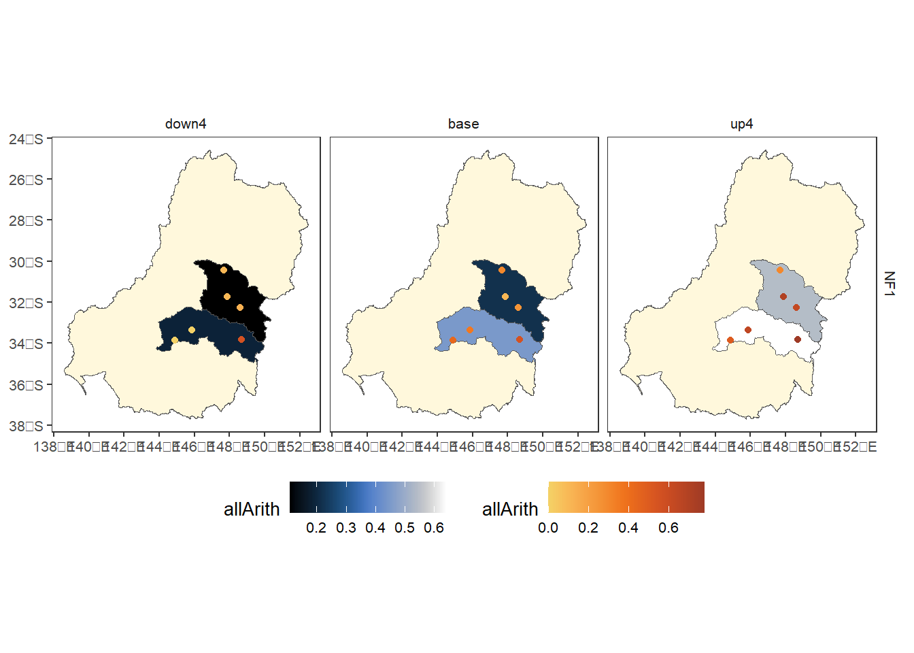
We can also overlay, here with the sdl layer as ‘primary’, here with a single color to show where gauges are.
obj_sdl_to_plot |>
dplyr::filter(env_obj == 'NF1') |> # Need to reduce dimensionality
plot_outcomes(y_col = 'allArith',
x_col = 'map',
colorgroups = NULL,
colorset = 'allArith',
pal_list = list('scico::berlin'),
facet_col = 'scenario',
facet_row = 'env_obj',
scene_pal = scene_pal,
sceneorder = c('down4', 'base', 'up4'),
underlay_list = 'basin',
overlay_list = list(overlay = 'bom_basin_gauges',
overlay_pal = 'grey40',
clip = TRUE)) +
ggplot2::theme(legend.position = 'bottom')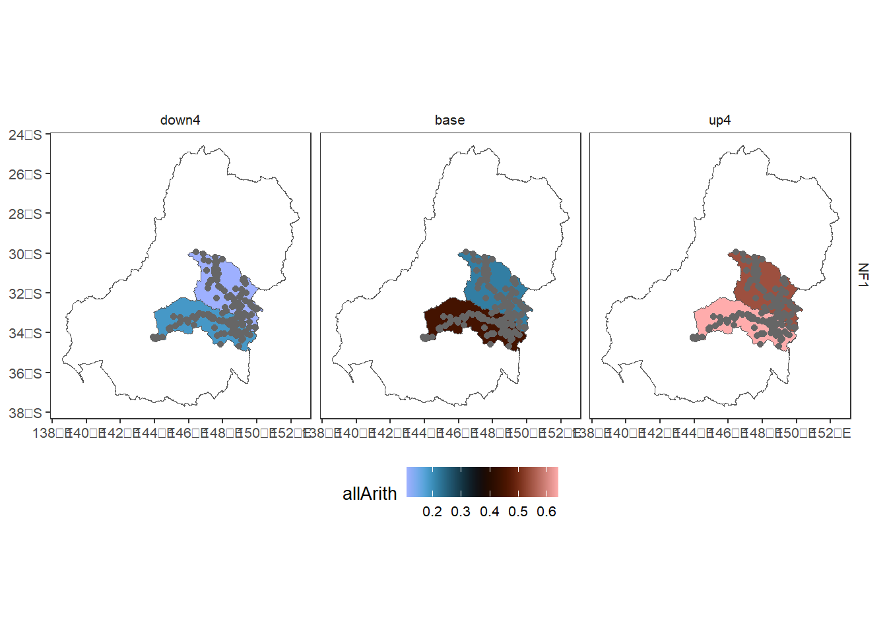
We can also give the overlay informative colors- this outcome is similar to what we’ve done above, but the amount of control we have over scaling etc differs depending on whether a layer is ‘primary’. I intend to make this more general, but have not yet because the conditionals keep getting more complex.
obj_sdl_to_plot |>
dplyr::filter(env_obj == 'NF1') |> # Need to reduce dimensionality
plot_outcomes(y_col = 'allArith',
x_col = 'map',
colorgroups = NULL,
colorset = 'allArith',
pal_list = list('scico::berlin'),
facet_col = 'scenario',
facet_row = 'env_obj',
scene_pal = scene_pal,
sceneorder = c('down4', 'base', 'up4'),
underlay_list = 'basin',
overlay_list = list(overlay = dplyr::filter(env_obj_points_to_plot, env_obj == 'NF1'),
overlay_pal = 'scico::oslo',
overlay_ycol = 'allArith',
clip = TRUE)) +
ggplot2::theme(legend.position = 'bottom')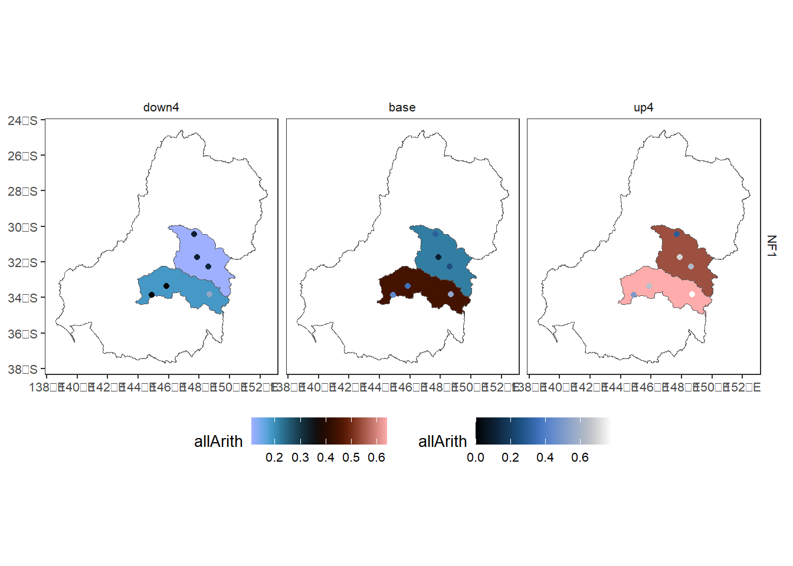
Here, we have a primary layer at the basin scale, overlay the sdl units with empty fill, and then put gauges on with informative values. There’s clearly a lot we can do here with the layering, most of which I’ve tested.
agg_theme_space$mdb |>
dplyr::rename(allArith = 4) |> # for readability
dplyr::filter(Objective %in% c("Maintain water-dependent species richness",
"Increase opportunities for colonial waterbird breeding*",
"Support instream & floodplain productivity")) |> # Need to reduce dimensionality
plot_outcomes(y_col = 'allArith',
x_col = 'map',
colorgroups = NULL,
colorset = 'allArith',
pal_list = list('scico::oslo'),
facet_col = 'scenario',
facet_row = 'Objective',
scene_pal = scene_pal,
sceneorder = c('down4', 'base', 'up4'),
overlay_list = list(list(overlay = 'sdl_units', overlay_pal = 'black'),
list(overlay = dplyr::filter(env_obj_points_to_plot, env_obj == 'NF1'),
overlay_pal = 'ggthemes::Orange-Gold',
overlay_ycol = 'allArith')))+
ggplot2::theme(legend.position = 'bottom')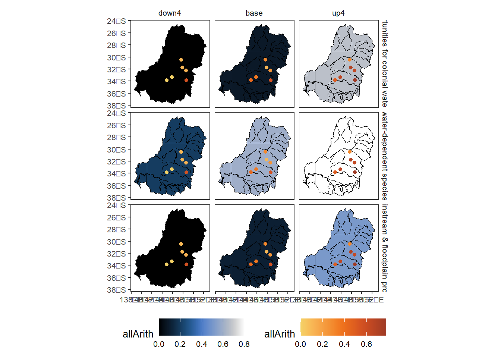
As with the other plotting functions, we can compare to baseline using arbitrary functions, here difference and relative most likely.
obj_sdl_to_plot |>
dplyr::filter(env_group == 'WB') |> # Need to reduce dimensionality
plot_outcomes(y_col = 'allArith',
x_col = 'map',
colorgroups = NULL,
colorset = 'allArith',
pal_list = list('ggthemes::Orange-Blue-White Diverging'),
facet_col = 'env_obj',
facet_row = 'scenario',
scene_pal = scene_pal,
sceneorder = c('down4', 'base', 'up4'),
base_lev = 'base',
comp_fun = 'difference',
group_cols = c('env_obj', 'polyID'), # Do I need to group_by polyID for the maps? Yes. should probably automate that.
underlay_list = list(underlay = basin, underlay_pal = 'azure'))
Relative
obj_sdl_to_plot |>
dplyr::filter(env_group == 'WB') |> # Need to reduce dimensionality
plot_outcomes(y_col = 'allArith',
x_col = 'map',
colorgroups = NULL,
colorset = 'allArith',
pal_list = list('ggthemes::Orange-Blue-White Diverging'),
facet_col = 'env_obj',
facet_row = 'scenario',
scene_pal = scene_pal,
sceneorder = c('down4', 'base', 'up4'),
base_lev = 'base',
comp_fun = 'relative',
zero_adjust = 'auto',
transy = 'log10',
group_cols = c('env_obj', 'polyID'), # Do I need to group_by polyID for the maps? Yes. should probably automate that.
underlay_list = list(underlay = basin, underlay_pal = 'azure'))Warning in self$trans$transform(x): NaNs producedWarning: Transformation introduced infinite values in discrete y-axis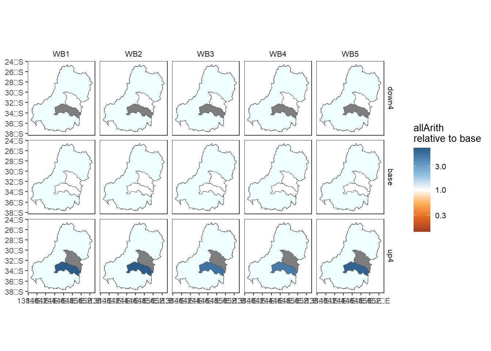
Aggsequencing
For most plots (except hydrographs), we need a way to choose which aggsequences to plot. It needs to work for the column-format and the name-format (though I guess we could force one).
And we need to be able to facet on it- ie facet by aggreation in step 3.
How? There’s an easy bypass of just asking for the column if namehistory, and facetting by columns. (is that true that we can facet by multiple?)
Otherwise, I think we should be able to feed it a funsequence that may be a subset of the original one, and it’ll grab that. Then if any item in the funsequence is longer than 1, facet on it.
We’re going to want this all the time to choose what to plot/process. But it will be essential for the tile explanatory plots.
Tiles
Causal networks
I think I’ll bring this over during the big revamp of demo/example/templating